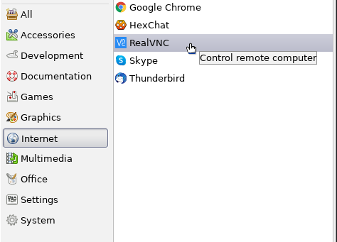
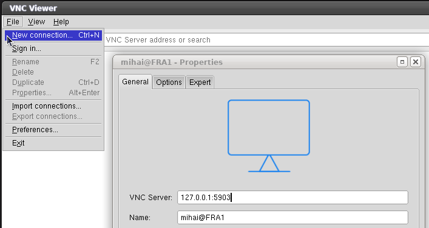

Install tigervnc-server
yum install tigervnc-server xorg-x11-fonts-Type1
Check if the selinux package was installed
repoquery --requires tigervnc-server repoquery --requires tigervnc-server | grep selinux dnf list installed | grep tigervnc-selinux tigervnc-selinux.noarch 1.10.1-9.el8_3 @ol8_appstream
In C8 tigervnc must be configured and started differently as in C7.
less /usr/share/doc/tigervnc/HOWTO.md
Add a user mapping
emacs /etc/tigervnc/vncserver.users :3=mihai
Configure Xvnc options
emacs /etc/tigervnc/vncserver-config-defaults securitytypes=vncauth,tlsvnc desktop=sandbox alwaysshared session=xfce
Set VNC password for the user
[mihai@centos: ~]$ vncpasswd
Check if selinux labels are correct:
chcon -u system_u -t user_home_dir_t -v $HOME chcon -u system_u -r object_r -t xdm_home_t -Rv $HOME/.vnc
Check tigervnc selinux policy module
repoquery --list tigervnc-selinux.noarch /usr/share/selinux/packages/vncsession.pp
Let's unpack the module and see the content
cd /tmp cp /usr/share/selinux/packages/vncsession.pp . semodule_unpackage vncsession.pp vncsession.mod sedismod vncsession.mod play with the menu: (m for the menu)
Read here about loading and unloading policies.
sestatus | grep Loaded Loaded policy name: targeted semodule -l semodule -l | grep vncsession
If vncsession.pp policy is not loaded then:
cd /usr/share/selinux/packages semodule -i vncsession.pp
Start tigetvnc server
systemctl enable vncserver@:3 systemctl start vncserver@:3
If the vncsession.pp policy is not loaded, the server will return this error
systemctl start vncserver@:3 Job for vncserver@:3.service failed because the control process exited with error code. See "systemctl status vncserver@:3.service" and "journalctl -xe" for details. journalctl -xe -- Unit vncserver@:3.service has begun starting up. Mar 14 16:51:25 centos-s-1vcpu-1gb-ams3-01 systemd[2154]: vncserver@:3.service: Failed to change SELinux context to system_u:system_r:vnc_session_t:s0: Operation not permitted Mar 14 16:51:25 centos-s-1vcpu-1gb-ams3-01 systemd[2154]: vncserver@:3.service: Failed at step SELINUX_CONTEXT spawning /usr/libexec/vncsession-start: Operation not permitted -- Subject: Process /usr/libexec/vncsession-start could not be executed -- Defined-By: systemd -- Support: https://support.oracle.com -- The error number returned by this process is 1. Mar 14 16:51:25 centos-s-1vcpu-1gb-ams3-01 systemd[1]: vncserver@:3.service: Control process exited, code=exited status=229 Mar 14 16:51:25 centos-s-1vcpu-1gb-ams3-01 systemd[1]: vncserver@:3.service: Failed with result 'exit-code'. -- The unit vncserver@:3.service has entered the 'failed' state with result 'exit-code'. Mar 14 16:51:25 centos-s-1vcpu-1gb-ams3-01 systemd[1]: Failed to start Remote desktop service (VNC). -- Subject: Unit vncserver@:3.service has failed -- Defined-By: systemd -- Support: https://support.oracle.com
If the selinux context is not correct the server will return the following error
journalctl -xe /SetroubleshootPrivileged.py[1364]: failed to retrieve rpm info for /var/lib/selinux/targeted/active/modules/400/vncsession SELinux is preventing (on-start) from entrypoint access on the file /usr/libexec/vncsession-start. For complete SELinux messages run: sealert -l 95553683-515b-405f-9b1a-1437e273df79 ***** Plugin restorecon (99.5 confidence) suggests ************************ If you want to fix the label. /usr/libexec/vncsession-start default label should be vnc_session_exec_t. Then you can run restorecon. The access attempt may have been stopped due to insufficient permissions to access a parent directory in which case try to change the following command accordingly. Do /sbin/restorecon -v /usr/libexec/vncsession-start
VNC connection is not encrypted. We must use a ssh tunnel.
Open both ports ssh 22 and vnc 5903
iptables -A INPUT -p tcp --dport 22 -j ACCEPT iptables -A INPUT -p tcp --dport 5903 -j ACCEPT
If you do this on a headless server then install X11, XFCE and lightdm as on
CentOS-8.
You have to start XFCE once for the <USER> to create the default desktop.
It may be needed to reboot the server once.
Download the VNC viewer for Linux from realvnc website and install it to /opt
su mkdir -pv /opt/vnc-viewer mv VNC-Viewer-*-Linux-x64 /opt/vnc-viewer/ cp -v /home/mihai/Code/git-main/script/realvnc/vnc-viewer.png /opt/vnc-viewer chown -Rv root:root /opt/vnc-viewer chcon -Rv -u system_u -t usr_t /opt/vnc-viewer
cat > /usr/share/applications/realvnc.desktop << EOF [Desktop Entry] Name=RealVNC GenericName=VNC Viewer Comment=Control remote computer Exec=/opt/vnc-viewer/VNC-Viewer-6.19.1115-Linux-x64 Terminal=false Icon=/opt/vnc-viewer/vnc-viewer.png Type=Application Categories=Network; Version=1.0 X-Desktop-File-Install-Version=0.23 EOF
Create the ssh tunnel
ssh -L 5903:$DIGITALOCEAN:5903 -l mihai $DIGITALOCEAN
or connect using a private key
ssh -L 5903:$DIGITALOCEAN:5903 -i ~/.ssh/id_rsa_digitalocean -l mihai $DIGITALOCEAN
Start RealVNC
Add a new connection

To connect from a Windows client read
here
about How to Tunnel VNC over SSH.
You will need
PuTTY and
RealVNC for this.
See which VNC port is currently open
nmap localhost PORT STATE SERVICE 22/tcp open ssh 25/tcp open smtp 5903/tcp open vnc-3 6003/tcp open X11:3Back to main index